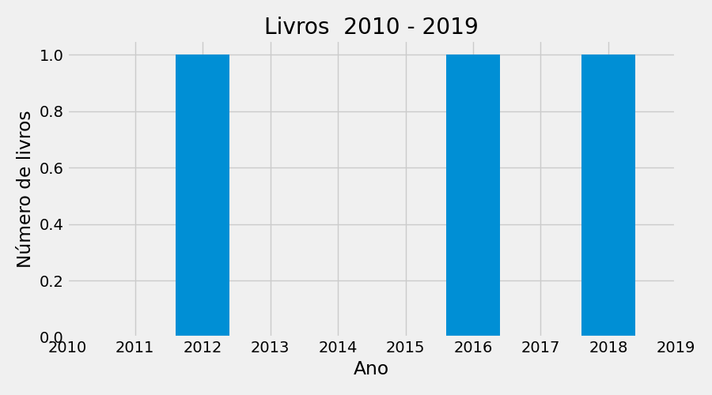

Nome: Tiago Guedes Ferreira Barros Nascimento: Recife - PE Instituição: Centro de Estudos e Sistemas Avançados do Recife Resumo: Tiago Barros é o Engenheiro Chefe de IoT no CESAR, responsável pela coordenação do Grupo de Pesquisa em IoT e por projetar e implementar a meta-plataforma KNoT Network of Things. Tiago é o representante do CESAR na Comissão Brasileira de Comunicações (CBC 3) da ANATEL que lida com a padronização das telecomunicações no Brasil, sendo responsável por redigir recomendações para a Comissão de Estudos 20 da ITU-T que trata de Internet das Coisas, comunidades e cidades inteligentes. Tiago Barros também é professor convidado do curso de pós-graduação em arquitetura de software para dispositivos móveis da UFPE / CIn / Motorola há mais de 15 anos. Ele também leciona disciplinas de prototipação eletrônica nos cursos de Ciência da Computação e Mestrado em Design no CESAR e na UFPE desde 2009. Em 2016, Tiago começou uma das primeiras especializações em IoT do país, na CESAR.School, sendo o coordenador responsável por definir toda a parte pedagógica, disciplinas e conteúdos do curso. Tiago possui mestrado em Ciência da Computação (UFPE-2007), B.Sc. em Ciência da Computação (UFPE-2003) e Técnico em Eletrônica (ETFPE-1998), com mais de 24 anos de experiência em desenvolvimento de software, com ênfase em Internet das Coisas, sistemas embarcados de tempo real, arquitetura de software e protocolos de comunicação.
Nome: Tatalina Cristina Silva de Oliveira Nascimento: Recife - PE Instituição: não informado Resumo: Inquieta, criativa e comunicativa. Aficionada por esportes, adrenalina e arte. Observadora nata de pessoas e suas formas de consumo, o que me leva à paixão pelos estudos de tendência de comportamento (trendhunter). Designer de formação, com uma trajetória profissional que me levou à moda e antropologia, docência, palestras e consultorias. Experiente em gerir projetos, grupos, elaborar parcerias entre instituições e desenvolver pesquisas que envolvam diversidade e inclusão. Interesse por inovação, moda e sua relação com gênero, negritude e questões socioculturais,bem como com memória gráfica, história da arte e do design, estudos de consumo, com foco em cultura material. Doutorado (2018) e Mestrado (2010) em Design pelo Programa de pós-graduação em Design da UFPE (2018).Especialização (2011) em Antropologia Social e Cultural pelo Instituto de Ciências Sociais da Universidade de Lisboa - Portugal (ICS-UL). Graduada pelo Centro Federal de Educação Tecnológica de Pernambuco (2006) no Curso Superior de Tecnologia em Design Gráfico.
Nome: Henrique Braga Foresti Nascimento: Varginha - MG Instituição: Centro de Estudos e Sistemas Avançados do Recife Resumo: Cursou a Escola Técnica de Eletrônica ETE "FMC" (de 1994 à 1996), possui graduação em Ciência da Computação pela Universidade do Estado de Minas Gerais (2001) e mestrado em Engenharia Mecânica pela Universidade Federal de Pernambuco (2006). É Professora da CESAR School, dealizador da plataforma robótica livre - Robô Livre e Engenheiro de Sistemas no CESAR. Conduziu diversas pesquisas sobretudo na área de Robótica, Eletrônica Embarcada e Veículo Aéreos não Tripulados acreditados por diversas Empresas e Órgãos de Fomento.
Nome: Luiz Francisco Martins Bentes Nascimento: no city Instituição: Centro de Estudos e Sistemas Avançados do Recife Resumo: Mestrando em Inteligência Artificial pela CESAR School e Pós-graduando em Machine Learning pelo Instituto Federal do Amazonas, engenheiro de Software no Instituto CESAR - Norte com ênfase na parte de Android Embarcado. Pesquisador em RFID e Inteligência Artificial no Polo de Inovação do Instituto Federal de Educação, Ciência e Tecnologia do Amazonas.
Período avaliado: 2010 - 2019
Número de membros na equipe: 4
Número de projetos de extensão: 0
Número de projetos de pesquisa: 0
Livros publicados: 1
Capítulos publicados: 0
Artigos completos publicados em periódicos: 3
Orientações:
dissertação de mestrado: 1
monografia_de_conclusao_de_curso_aperfeicoamento_e_especializacao: 10
trabalho_de_conclusao_de_curso_graduacao: 1
Projetos de extensão
Projetos de pesquisa
Publicação de livros e capítulos
Produção de livros por ano

Número de livros por ano.
Produção de capítulos por ano
Número de capítulos por ano.
Resumo da produção de livros do grupo 2010-2019
FULL_NAME
2012
TOTAL
0
Henrique Braga Foresti
1
1
Não há capítulos publicados
Publicação em periódicos
Produção de periódicos por ano
Número de publicações por ano.
Produção de periódicos por qualis
Publicações de periódicos por qualis.
Interação entre pesquisadores
Grafo de colaboração entre pesquisadores apenas em artigos Não foi possível localizar interações em periódicos para os seguintes pesquisadores:
Tiago Guedes Ferreira Barros
Tatalina Cristina Silva de Oliveira
Henrique Braga Foresti
Luiz Francisco Martins Bentes
Relação de artigos em periódicos
Os Robôs se Libertam. ano: 2011.0, Revista Espírito Livre, XX. , JCR -99.0. ['Henrique Braga Foresti']
Os robôs em sala de aula:Desmistificação da tecnologia atravésda plataforma colaborativa Robô Livre.. ano: 2012.0, Revista IBGM, XX. , JCR -99.0. ['Rodrigo Pessoa Medeiros', 'Henrique Braga Foresti', 'Paulo Faltay Filho']
Odoyá, minha mãe! Desconstruindo o uso da imagem da Iemanjá a partir do caso Farm. ano: 2016.0, Modapalavra e-periódico, XX. , JCR -99.0. ['Tatalina Cristina Silva de Oliveira', 'Ertz Clarck Melindre dos Santos', 'Ana Flávia da Fonte Netto de Mendonça']
Produção individual de projetos e periódicos por ano e qualis 2010-2019
['Estilo', 'Moda, Cultura e Sociedade', 'História da Moda Comtemporânea', 'História da Moda I', 'Planejamento e Desenvolvimento de Coleção II', 'Design de Superfície']
nan
1
Faculdade SENAC
2014
5
05
05
Especialização em Produção de Moda e Styling
POS-GRADUACAO
['Moda Contemporânea']
nan
2
Faculdade SENAC
2016
5
05
05
Especialização em Modelagem e Criação
POS-GRADUACAO
['Orientação de TCCs']
nan
Compilação da produção
total de projetos de pesquisa como coordenador = 2
total de projetos de pesquisa como coordenador = 1
total de projetos de pesquisa como integrante = 6
Orientações:
produção total de livros = 0
Não há capitulos
produção total de artigos = 0
Resumo de orientações do grupo 2010-2019
FULL_NAME
Dissertação de mestrado
MONOGRAFIA DE CONCLUSAO DE CURSO APERFEICOAMENTO E ESPECIALIZACAO
TRABALHO DE CONCLUSAO DE CURSO GRADUACAO
TOTAL
0
Henrique Braga Foresti
0
0
1
1
1
Tatalina Cristina Silva de Oliveira
0
6
0
6
2
Tiago Guedes Ferreira Barros
1
4
0
5
Possibilidade da contabilização de co-orientação.
Resumo da produção de artigos em periódicos do grupo 2010-2019
FULL_NAME
XX
TOTAL
0
Henrique Braga Foresti
2
2
1
Tatalina Cristina Silva de Oliveira
1
1
Indicadores CAPES
Para saber o método de cálculo dos índices consulte https://rafatieppo.github.io/lucylattes/.
Os seguintes PPGs foram econtrados nos curriculos dos pesquisadores: MESTRADO EM DESIGN.
O PPG avaliado foi: ENGENHARIA DE SISTEMAS AGRÍCOLAS
Índice de orientação (IndOri)
Avalia as defesas com orientação de docentes permanentes(DP) do programa. O indicador é calculado para cada ano e depois calculada a média para o quadriênio
Para que a orientação possa ser contabiliza, no cadastro de orientações do currículo Lattes do pesquisador, o nome do PPG da orientação deve ser idêntico ao PPG avaliado. Maísculas e minúsculas NÃO diferem.
Índice de Produtividade referente a artigos científicos (IndProdArt)
Avalia toda a produção intelectual do programa no formato de artigo científico, sendo que a participação de um docente permanente como autor é condição obrigatória para validar a produção.
Índice de autoria discente
Índice de discentes autores (IndAut):Avalia a proporção de discentes autores (E) em relação ao total de discentes do programa. Foram considerados para o cálculo de E, os discentes e egressos até cinco anos quando autores de artigos.
Índice de produtos com autoria discente (IndDis): Avalia a quantidade de produtos intelectuais (artigos) de autoria discente ou de egressos até 5 anos, em relação ao total de discentes do programa (G).
Considera apenas produção em periódicos
INDAUT: Índice de discentes autores, INDDIS: Índice de produtos com autoria discente
Indicador de distribuição dos docentes permanentes por faixa de IndProd (DistIndProdDP)
Nesse caso, calcula-se o IndProd para cada docente permanente e posteriormente os docentes são distribuídos conforme as faixas apresentadas para o IndProd. Feito isso, calcula-se o percentual de docentes permanentes (DP) classificados em cada faixa (MB, B, R e F/D) em relação ao corpo docente permanente total. O somatório dos percentuais das faixas MB, B e R permite avaliar o equilíbrio na distribuição da produção docente.
Classificação dos pesquisadores por quadriênio
Indicador DistIndProdDP
GOSTOU ?
Acesse repositório lucyLattes e nos de uma estrela clicando na estrela no topo da página(lado direito)
Caso queira, vc pode pode ajudar com quanto quiser para manter o projeto via PayPal:
AVISOS:
Arquivo para classificacao qualis utilizado: qualis_agrarias_periodicos_2016.csv
Este programa é um software livre; você pode redistribui-lo e/ou modifica-lo dentro dos termos da Licença Pública Geral GNU. Verifique o arquivo LICENSE.txt
Os resultados estão sujeitos a falhas devido a inconsistencias no preenchimento dos CVs Lattes